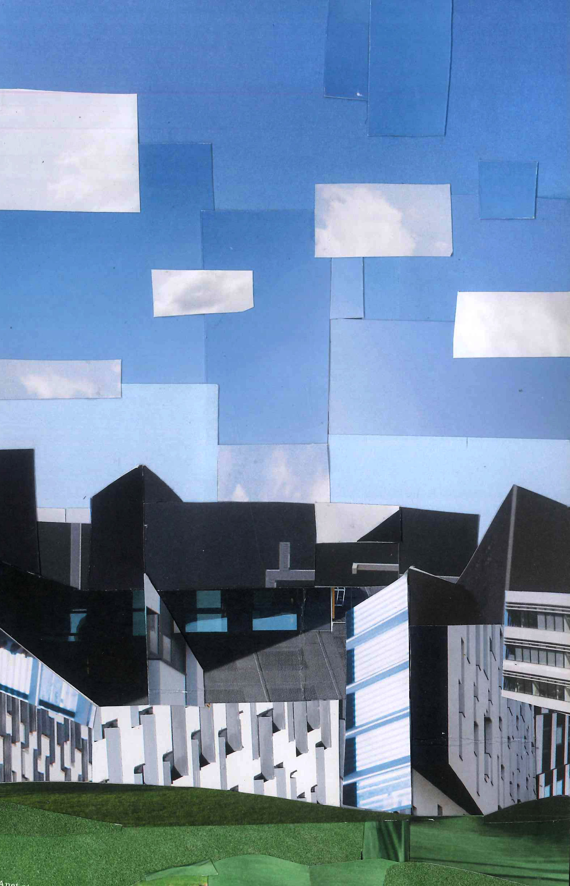
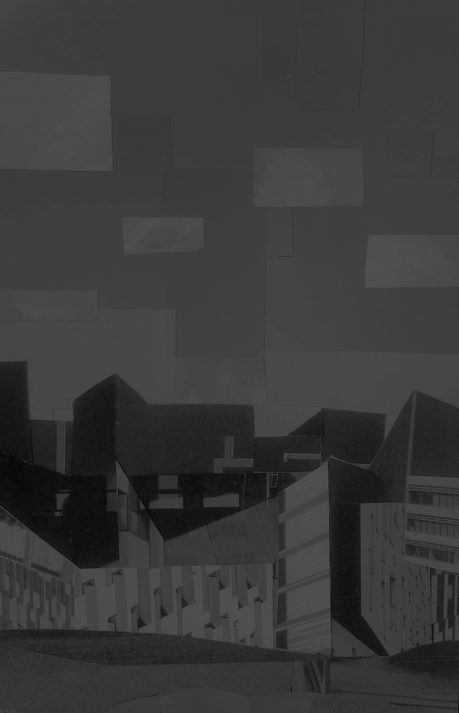

*Pointing*
Here we have, uh
Marcus Aurelius
Disneyland
The Vatican
And the Italian Independence Building
WU Campus
Location:
Materials:
Journal entry
We took the night train to Vienna! This is actually my first time ever going to a foreign country speaking none of the language with no prep beforehand, so I’ve been a bit intimidated and embarrassed to have to speak English. Also this city is so clean and stunning and empty, but beautiful, and hollow? Not quite hollow. Not sure how exactly to feel about it yet. During our free time in the afternoon I snuck into the State Hall in the Austrian National Library and avoided the eight-euro entrance fee. The trick is to wait until a group is all going inside together and merge with the pack. I’m very glad I didn’t pay that much for a ticket, although this might be a sign that my delinquency is getting out of control. I spent the evening trying unsuccessfully to track down a concert and then went to a club with some others from the program where I did not have nearly enough to drink.